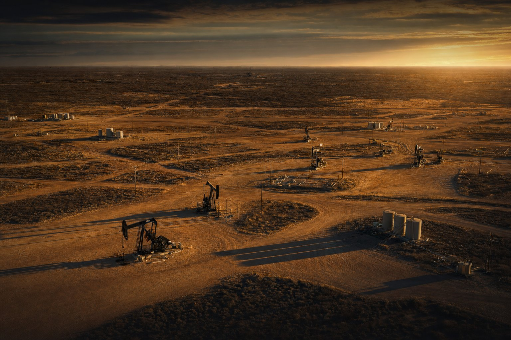

Source & screen
Opportunities come from long-standing relationships with operators, landmen, and engineers. Most are declined at this stage.
Warrior Race Investments is a management company that sources, evaluates, and administers non-operated oil and gas participations in established American basins — built around operator quality, transparent reporting, and investor-aligned structures.
Information on this site is educational and is not an offer to sell or a solicitation to buy any security. Any offering is made only to verified accredited investors through definitive documents.
The Company
Warrior Race Investments is an independent energy investment management company based in Texas. We identify non-operated working interest and related participation opportunities alongside established operators, complete our own diligence, structure the vehicle, and then handle the administrative work — subscriptions, records, distributions, and reporting — for the life of each investment.
We do not drill wells and we do not run field operations. Our role is selection, structuring, and stewardship: choosing which projects merit investor capital, negotiating the terms on which investors participate, and reporting candidly on what happens next.
Each investment vehicle we manage is organized as its own entity with its own documents, economics, and risk profile. Warrior Race Investments is the manager — not the offering.
Participation without the operational overhead of running a field program.
Development in mature U.S. producing regions with existing infrastructure and data.
A repeatable screening and diligence sequence applied to every opportunity we consider.
Regular reporting on production, distributions, and tax documentation for each vehicle.
Investment Philosophy
Energy investing rewards patience and preparation far more than enthusiasm. Our approach is intentionally narrow — we would rather pass on most of what we see than stretch our criteria.
We evaluate the operator before the acreage: track record, technical team, balance-sheet discipline, and how they treat non-operated partners.
We concentrate on regions with long production histories, dense well data, and established midstream access rather than unproven exploration concepts.
We look for projects where the capital budget is well defined and the path from spend to first revenue is short and clearly explained.
Non-operated structures let investors participate in development programs without assuming day-to-day operating responsibility.
We structure vehicles so the manager's outcome depends on investor outcomes, and we say plainly what fees and splits apply in the offering documents.
How We Work
Opportunities come from long-standing relationships with operators, landmen, and engineers. Most are declined at this stage.
We review geology, offset well data, cost assumptions, title, and operator history, then structure the vehicle and its documents.
Accredited investors review the data room, complete subscription documents, and fund. Accreditation is verified as part of the process.
Once a project is producing, we administer distributions when available and provide production, financial, and tax reporting.
Managed Opportunities
Each opportunity is a separate entity with its own offering materials. Warrior Race Investments serves as manager; it is not itself the investment.

A non-operated working-interest venture in the Permian Basin.
WRI Permian 1 is a separate investment vehicle managed by Warrior Race Investments. Its strategy, terms, minimums, fees, and risk factors are described on its own offering page and in its definitive documents — not here.
Offering details, risk factors, and eligibility requirements are presented on that page.
Education
Direct energy participation is a specialized, illiquid, high-risk allocation. It is not a substitute for a diversified portfolio, and it is not suitable for most investors. The honest version of the case looks like this.
Producing wells can generate periodic revenue distributions to interest owners.
The trade-off: distributions are never guaranteed, vary with production and commodity prices, and can stop entirely.
U.S. tax law provides specific treatment for certain oil and gas investments, including deductions tied to development costs.
The trade-off: treatment depends on your circumstances and can change. Nothing here is tax advice — consult your own advisor.
Investors participate in physical, income-producing infrastructure rather than a purely financial instrument.
The trade-off: physical assets carry operational, mechanical, environmental, and regulatory risk.
Returns are driven by drilling results and commodity markets rather than equity index behavior.
The trade-off: low correlation is not lower risk. Interests are illiquid, transfer-restricted, and may lose their entire value.
Our Team

Founder & Managing Partner
Dalton J. Ortiz is the founder of Warrior Race Investments, where he leads the firm's strategic direction, investment selection, and capital formation efforts. His background is rooted in oil and natural gas investing, with a focus on non-operated working-interest opportunities across Texas, New Mexico, Colorado, and Wyoming.
Throughout his career, Dalton has focused on evaluating producing and development-stage assets, building financial models, assessing operators, and sourcing opportunities through long-standing relationships with landmen, engineers, and operating teams. His work spans active U.S. basins — including the Permian and DJ — where he applies a disciplined, risk-aware approach to every opportunity.
Dalton believes successful energy investing requires careful underwriting, clear communication, and alignment with investors' long-term objectives. Rather than treating each investment as a standalone transaction, Warrior Race Investments is built around thoughtful opportunity selection, portfolio diversification, and lasting investor relationships.
Contact the firm →“Trust is earned through disciplined, transparent decisions — and pursuing the right opportunities for the right reasons.”
Dalton J. Ortiz

Capital Solutions Representative
Cole McCullough is an investment professional and fund manager with experience in commercial real estate, alternative assets, capital raising, and oil and gas opportunities.
Having raised millions in investor equity, Cole approaches every relationship with a clear responsibility: earning and protecting investor trust. His philosophy is grounded in Trust, Mindset, and Drive — combining disciplined decisions, relentless execution, transparent communication, and a long-term commitment to investors.
Cole works with investors to align opportunities with their individual goals, risk tolerance, time horizon, and broader portfolio strategy. From commercial real estate to private oil and gas investments, his focus is on thoughtful diversification and relationships that go beyond a single transaction.
Connect with Cole →“If you trust me, I never take that lightly.”
Cole McCullough
Next Step
If you are an accredited investor exploring direct energy participation, we are glad to walk through how our vehicles are structured, what the risks are, and whether any current opportunity is an appropriate fit for your situation.
Investments in oil and gas are speculative, illiquid, and involve the risk of total loss of capital.